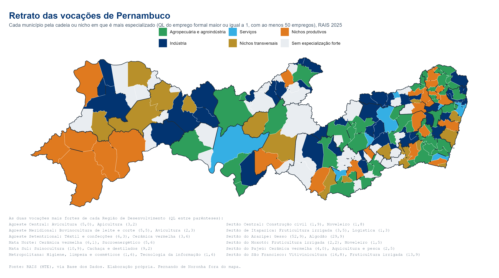

Todas as atividades econômicas da CNAE em cada município e Região de Desenvolvimento: onde cada atividade está e em que cada território é especializado.
As cadeias e nichos do painel cobrem as atividades mais importantes do estado, mas não todas. Esta página mede todas as subclasses da CNAE com emprego formal em Pernambuco, para responder duas perguntas: em que um município ou região é especializado, e onde está uma atividade qualquer. A medida é o quociente locacional (QL) do emprego formal: o peso da atividade no território dividido pelo peso dela no estado. Acima de 1, o território é especializado.

Retrato das vocações de Pernambuco: cada município pela cadeia ou nicho em que é mais especializado.
Fonte: IBGE, Produção Agrícola Municipal, Pesquisa da Pecuária Municipal e produção da aquicultura, via SIDRA. QL do valor: peso do produto no valor agropecuário do território dividido pelo peso no estado; só com R$ 50 mil ou mais. Rebanhos aparecem em cabeças, sem valor nem QL.
Código
opcoes = A.nome.map((n, i) => ({i,nome: n,cod: A.cod[i],emprego: A.emprego[i],n_mun: A.n_mun[i],secao: A.nome_secao[i]}))viewof busca = Inputs.search(opcoes, {placeholder:"Busque uma atividade: café, uva, cerâmica, software, hotel...",columns: ["nome","cod","secao"]})viewof escolha = Inputs.table(busca, {columns: ["nome","cod","emprego","n_mun"],header: {nome:"Atividade",cod:"Subclasse",emprego:"Empregos em PE",n_mun:"Municípios"},format: {emprego: d =>nf(d)},multiple:false,required:false,rows:8,value: opcoes.find(d =>/cultivo de café/i.test(d.nome)) ?? opcoes[0]})
Código
{const sel = escolha ?? opcoes[0];const por =newMap();for (const [id, linhas] ofObject.entries(V.municipios)) for (const l of linhas) if (l[0] === sel.i) por.set(id, {emprego: l[1],estab: l[2],ql: l[3]});const feats = geo.features.map(f => ({...f,properties: {...f.properties,...(por.get(f.properties.id_municipio) ?? {})}}));const faixa = q => q ==null?"Sem emprego formal": q <1?"Abaixo de 1": q <2?"1 a 2": q <5?"2 a 5":"5 ou mais";const dom = ["Sem emprego formal","Abaixo de 1","1 a 2","2 a 5","5 ou mais"];const mapa = Plot.plot({projection: {type:"mercator",domain: {type:"FeatureCollection",features: feats}},width:1000,height:340,color: {domain: dom,range: ["#EEF1F4","#C9DCEC","#7FB1D8","#2E78B7","#023471"],legend:true},marks: [Plot.geo(feats, {fill: d =>faixa(d.properties.emprego>= V.emprego_minimo? d.properties.ql: (d.properties.emprego?0.5:null)),stroke:"white",strokeWidth:0.4,title: d =>`${d.properties.name_muni}\n${d.properties.emprego?nf(d.properties.emprego) +" empregos · QL "+nf(d.properties.ql,1) :"sem emprego formal"}`})]});const t = [...por.entries()].map(([id, d]) => ({mun: nomeMun.get(id) ?? id,...d})).sort((a, b) => b.emprego- a.emprego);returnhtml`<h4>${sel.nome} <span class="voc-cod">${sel.cod}</span></h4> <p>${nf(A.emprego[sel.i])} empregos formais e ${nf(A.estab[sel.i])} estabelecimentos em ${nf(A.n_mun[sel.i])} municípios (RAIS ${V.ano}). ${tagCad(sel.i).length?html`Faz parte de: ${tagCad(sel.i)}`:""}</p>${mapa} <div class="voc-tab"><table class="table table-sm"><thead><tr><th>Município</th><th>Empregos</th><th>Estab.</th><th>QL</th></tr></thead><tbody>${t.slice(0,40).map(d =>html`<tr><td>${d.mun}</td><td>${nf(d.emprego)}</td><td>${nf(d.estab)}</td><td>${d.emprego>= V.emprego_minimo?nf(d.ql,1) :"–"}</td></tr>`)}</tbody></table></div> <p class="fonte">Municípios com menos de ${V.emprego_minimo} empregos na atividade aparecem como "abaixo de 1" no mapa e sem QL na tabela, para evitar QL alto com poucos vínculos.</p>`;}
Código
prodOp = PROD.produtos.nome.map((n, i) => ({i,nome: n,grupo: PROD.produtos.grupo[i],valor: PROD.produtos.valor[i],n_mun: PROD.produtos.n_mun[i]}))viewof buscaP = Inputs.search(prodOp, {placeholder:"Busque um produto: uva, leite, café, tilápia, mandioca...",columns: ["nome","grupo"]})viewof escP = Inputs.table(buscaP, {columns: ["nome","grupo","valor","n_mun"],header: {nome:"Produto",grupo:"Pesquisa",valor:"Valor em PE (R$ mil)",n_mun:"Municípios"},format: {valor: d =>nf(d)},multiple:false,required:false,rows:8,value: prodOp[0]})
Código
{const sel = escP ?? prodOp[0];const por =newMap();for (const [id, ls] ofObject.entries(PROD.municipios)) for (const l of ls) if (l[0] === sel.i) por.set(id, {valor: l[1],qtd: l[2],ql: l[3]});const feats = geo.features.map(f => ({...f,properties: {...f.properties,...(por.get(f.properties.id_municipio) ?? {})}}));const rebanho =/Rebanhos/.test(sel.grupo);const faixa = d => rebanho ? (d.qtd?"Com rebanho":"Sem registro") : d.ql==null? (d.valor?"Abaixo de R$ 50 mil":"Sem registro") : d.ql<1?"QL abaixo de 1": d.ql<2?"QL 1 a 2": d.ql<5?"QL 2 a 5":"QL 5 ou mais";const dom = rebanho ? ["Sem registro","Com rebanho"] : ["Sem registro","Abaixo de R$ 50 mil","QL abaixo de 1","QL 1 a 2","QL 2 a 5","QL 5 ou mais"];const cores = rebanho ? ["#EEF1F4","#2E9E5B"] : ["#EEF1F4","#E3EDE5","#C3DFC9","#7CC08E","#2E9E5B","#145A32"];const t = [...por.entries()].map(([id, d]) => ({mun: nomeMun.get(id) ?? id,...d})).sort((a, b) => (b.valor|| b.qtd) - (a.valor|| a.qtd));const un = (PROD.produtos.unidade[sel.i] ??"").toLowerCase();returnhtml`<h4>${sel.nome} <span class="voc-cod">${sel.grupo}</span></h4> <p>${sel.valor?html`${reaisMil(sel.valor)} de valor da produção em `:""}${nf(sel.n_mun)} municípios (IBGE ${PROD.produtos.ano[sel.i] ??""}).</p>${Plot.plot({projection: {type:"mercator",domain: {type:"FeatureCollection",features: feats}},width:1000,height:340,color: {domain: dom,range: cores,legend:true},marks: [Plot.geo(feats, {fill: d =>faixa(d.properties),stroke:"white",strokeWidth:0.4,title: d =>`${d.properties.name_muni}\n${d.properties.valor?reaisMil(d.properties.valor) :""}${d.properties.qtd?nf(d.properties.qtd) +" "+ un :"sem registro"}${d.properties.ql!=null?" · QL "+nf(d.properties.ql,1) :""}`})]})} <div class="voc-tab"><table class="table table-sm"><thead><tr><th>Município</th><th>Valor</th><th>Quantidade</th><th>QL do valor</th></tr></thead><tbody>${t.slice(0,40).map(d =>html`<tr><td>${d.mun}</td><td>${d.valor?reaisMil(d.valor) :"–"}</td><td>${d.qtd?nf(d.qtd) +" "+ un :"–"}</td><td>${d.ql==null?"–":nf(d.ql,1)}</td></tr>`)}</tbody></table></div>`;}
Fonte: IBGE, Produção Agrícola Municipal, Pesquisa da Pecuária Municipal e produção da aquicultura, via SIDRA. QL do valor: peso do produto no valor agropecuário do território dividido pelo peso no estado; só com R$ 50 mil ou mais. Rebanhos aparecem em cabeças, sem valor nem QL.
Fonte: RAIS (MTE), vínculos ativos em 31/12, via Base dos Dados; diretório CNAE 2.0 (IBGE). Elaboração própria. A RAIS só cobre o emprego formal: atividades com muita informalidade ou trabalho por conta própria (como parte da agricultura familiar e da confecção) aparecem menores do que são. Para essas, veja nas páginas das cadeias o QL das empresas (com MEI) e da produção do IBGE.